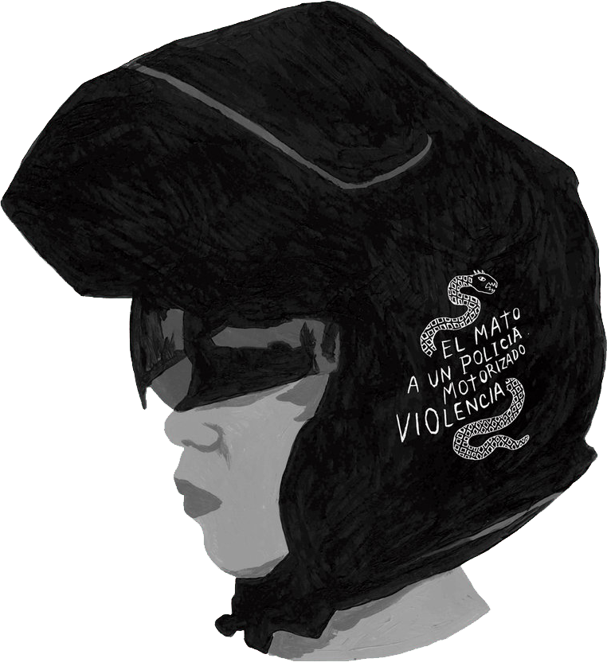

EL MATO A UN POLICIA MOTORIZADO
Él Mató a un Policía Motorizado es una banda zurda de indie rock con origen en la ciudad de La Plata, Argentina. Integrada por Santiago Motorizado (bajo y voz), Doctora Muerte (batería), Pantro Puto (guitarra), Niño Elefante (guitarra) y Chatrán Chatrán (teclados). La banda combina el punk rock con el noise rock y el noise pop, logrando un sonido de guitarras fuertemente distorsionadas y en primer plano. Entre las influencias de Él Mató a un Policía Motorizado se cuentan los Pixies, Ramones, Weezer, Sonic Youth y The Velvet Underground. La banda comenzó cuando sus miembros Willy y Santiago iban a la secundaria, donde se conocieron. "Manuel tenía una banda y me invitó a tocar... fuimos armando temas propios, llamamos a Willy y después a Gustavo.Medio como que fuimos pasando de banda en banda hasta que formamos esto". Luego de editar su disco debut homónimo en 2004, la banda se propuso realizar una trilogía de EP dedicados, respectivamente, al nacimiento, la vida y la muerte. En 2005 Él Mató a un Policía Motorizado lanzó el primer EP, Navidad de Reserva, y en 2006 el segundo, Un Millón de Euros. Finalmente, la culminación de la trilogía llegó con Día de los Muertos en 2008. El 28 de noviembre de 2012 salió a la luz su segundo disco de estudio, "La Dinastía Scorpio".